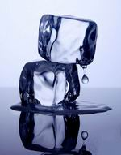

NO ME SALEN
(APUNTES TEÓRICOS Y EJERCICIOS DE BIOFÍSICA DEL CBC)
CALOR Y TERMODINÁMICA
|
|

|
| |
Adicional NMS 14* - Un fragmento de hielo de 500 gramos que se encuentra a 0ºC se introduce en un litro de agua a 20ºC dentro de un recipiente adiabático.
1- Encontrar el estado de equilibrio del sistema, indicando las cantidades de sólido y líquido y la temperatura final.
2- Calcular el cambio de entropía del sistema. |
|
| |
La primera parte de este ejercicio es de calorimetría... un sencilla mezcla de agua líquida y hielo. Claro, no hay forma de saber a priori si el hielo se va a derretir completamente y va a elevar su temperatura o si se va a derretir sólo parcialmente y la temperatura final será 0ºC, o sea, la temperatura constante del cambio de estado del agua.
No hay otra forma que no sea probar. Por ejemplo me pregunto cuánto calor requiere el hielo sólo para derretirse:
QH = LFA . mH
QH = 80 (cal/gr) . 500 gr
QH = 40.000 cal
Y qué cantidad de calor puede ceder el agua ya líquida para derretir ese hielo:
QL = c . mL (TF – T0)
QL = 1 (cal/grºC) . 1.000 gr (0ºC – 20ºC)
QL = – 20.000 cal
Se ve que el agua líquida, enfriándose hasta la menor temperatura que puede alcanzar (acordate que el intercambio de calor cesa cuando los cuerpos alcanzan la misma temperatura... y que el hielo se encontraba a 0ºC), no puede ceder todo el calor que necesita el hielo para derretirse completamente... de modo que sólo se derretirá una parte, veamos qué parte. Llamemos mD a la masa de hielo que se derrite.
mD = QD / LFA
mD = 20.000 cal / 80 (cal/gr)
mD = 250 gr
Por lo tanto, qué tenemos en el estado final: |
|
|
una cantidad de hielo sin derretirse, mnD = 250 gr
una cantidad de hielo derretido, ahora es líquido, mD = 250 gr
una cantidad de agua líquida que no cambió de estado, mL = 1000 gr
todo a una temperatura de 0ºC |
|
|
|
De más está decirte que el agua líquida que proviene del hielo es indistinguible del agua líquida que ya era líquida antes de hacer la mezcla.
Para responder la segunda pregunta, el cambio de entropía del sistema, tenemos que sumar los cambios de entropía de cada parte del sistema. Miremos los componentes del sistema en el recuadro de respuesta anterior. La cantidad de hielo que no se derritió no varió su temperatura, no entregó ni recibió calor... luego no varió su entropía.
La cantidad de hielo que sí se derritió varió su entropía ya que recibió una cantidad de calor, justamente para poder derretirse. Como los cambios de estado se realizan a temperatura constante, el cálculo de esa variación de entropía, ΔSD , es sencillo:
ΔSD = Q / T
ΔSD = 20.000 cal / 273 K
ΔSD = 73,26 cal/K
Ahora viene el componente del litro (el kilo) de agua que se enfrió de 20 a 0 grado. Como la temperatura no se mantuvo constante el cálculo de entropía hay que realizarlo con su definición original: |
|
|
| |
 |
(rev significa: sobre un camino reversible) |
|
|
|
|
Supongo que ya te olvidaste cómo se integra... bueno, mejor que lo recuerdes. Una pequeña cantidad de calor cedido por el agua, dQ, es igual al producto entre el calor específico, la masa y el pequeño cambio de temperatura que se produce, dT. Eso se expresa de la siguiente manera:
dQ = c m dT
Que no es otra cosa que la ley de calorimetría expresada para pequeños cambios.
Como el calor específico y la masa son constantes salen afuera de la integral y lo que queda adentro es el cociente dT/T. Entonces vamos a la tabla de integrales definidas (viste, no era tan difícil), y llegamos a:
ΔSL = c m ln (TF /T0)
Donde ln es la función (que tu calculadora científica posee) logaritmo natural.
ΔSL = 1 (cal/grºK) . 1.000 gr . ln (273 K / 293 K)
ΔSL = – 70,70 cal/K
Fijate que de entrada expresé el calor específico en grados Kelvin y no en centígrados. Para los cálculos de calorimetría es lo mismo... pero para los cálculos de entropía no: la definición de entropía se refiere exclusivamente a temperaturas absolutas.
Como el sistema no tiene más componentes, la variación de entropía del sistema, ΔSS, es igual a la variación de entropía de sus componentes.
ΔSS = ΔSD + ΔSL
ΔSS = 73,26 cal/K – 70,70 cal/K
|
|
|
|
|
|
|
| Como ves, el sistema aumenta su entropía, reafirmando que el proceso habrá de ocurrir espontáneamente en un recipiente adiabático. Algo que vos ya sabías: sería muy raro destapar el recipiente y encontrar un kilo y medio de agua congelada. Es claro que el fenómeno discurre en una dirección y no en la contraria. |
|
|
Tips. Era razonable, lógico y esperable que el cálculo de calor y de variación de entropía del agua líquida (que se enfriaba durante la mezcla) fuese negativo. Ya que todo calor cedido será negativo.
También es razonable (desde todo punto de vista) que la variación de entropía de la parte del hielo que se derrite sea positiva. En forma sólida sus moléculas están ordenadas (forman un cristal), y como líquido sus moléculas abandonan las posiciones de estructura ordenada y se ponen a vagar en el resto de líquido. Y vos ya sabías que un aumento de entropía es un aumento de desorden. |
 |
|
|
|
| También, claro está, podés verlo desde el punto de vista del signo del calor, ya que como el otro factor del que depende la variación de entropía es la temperatura absoluta (que siempre es positiva), resulta que: |
|
|
algo que absorbe calor aumenta su entropía
algo que cede calor disminuye su entropía |
|
|
Y todavía nos falta justificar que la variación de entropía haya sido calculada por una evolución reversible (requisito de la definición de entropía). Bien, como la entropía es una función de estado, la variación valdrá lo mismo sea cual sea el camino que haya tomado la evolución mientras los estados iniciales y finales sean los mismos. Y el calor necesario para calentar o enfriar agua tiene un camino definido, vale siempre lo mismo. |
|
|
*Ejercicio tomado en un 2do. examen parcial en Ciudad Universitaria, en julio de 2008.
Desafío: repetir el ejercicio... pero ahora con una masa inicial de 200 gr de hielo.
|
|
 |
| Algunos derechos reservados.
Severísimas penas a quien orinase en un paso a nivel sobre la vía electrificada. Se permite su reproducción citando la fuente. Última actualización jul-10. Buenos Aires, Argentina. |
|
|
| | |
|
| | | |
|